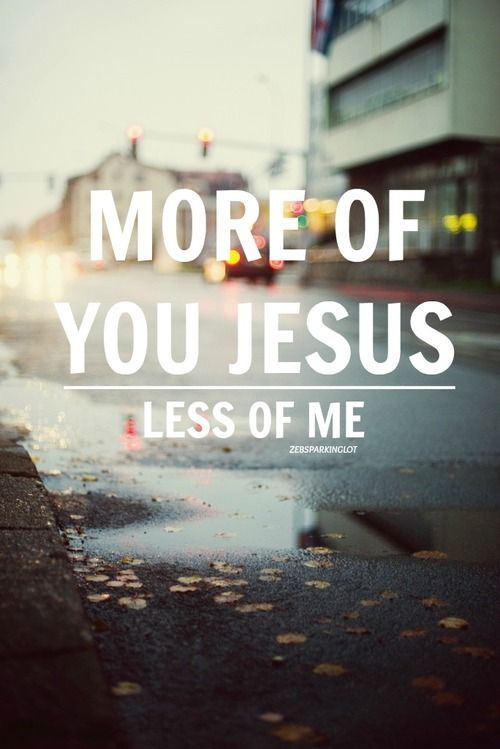

The Risk of Christ
Jesus offers eternal life. What would you risk to obtain eternal life? When we think of all that life on earth has to offer, there is nothing that compares with the offer that Jesus makes.
Everything on earth is only temporary. Few will live past the age of 100. At least, it's worth checking out. What do you have to lose?
John 3 (KJV):16 For God so loved the world, that he gave his only begotten Son, that whosoever believeth in him should not perish, but have everlasting life.
Can it be that simple? We just believe in Him and we have eternal life?
John 5 (KJV):24 Verily, verily, I say unto you, He that heareth my word, and believeth on him that sent me, hath everlasting life, and shall not come into condemnation; but is passed from death unto life.
This is the Gospel message. If you believe in the Son, you have eternal life.
John 3 (KJV):36 Whoever believes in the Son has eternal life, but whoever rejects the Son will not see life, for God’s wrath remains on them.
When I first heard this, it seemed too good to be true. I wondered how could I know if it's true. I told God, "I have to hear from You." If it's true I reasoned, "God, You are big enough that You can get in touch with me and let me know in a way that I could know without a shadow of a doubt."
Jesus said in John 7 (KJV):17 If any man will do his will, he shall
know of the doctrine, whether it be of God, or whether I speak of myself.
We can know the truth if we are willing to let God show us.
